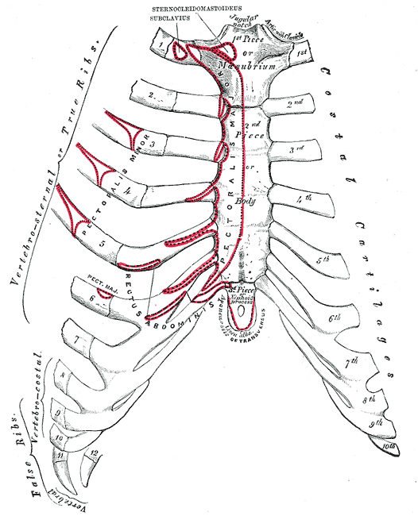

DX.1 — Syndrome de la paroi thoracique
1. Définition et sémantique
La douleur pariétale se définit par une douleur de paroi que la palpation reproduit, car ce syndrome de paroi reprend cette définition.[1]. On lui préfère ce nom global plutôt qu'ostéochondrite ou chondrocostite, donc ce syndrome de paroi cesse d'empiler des étiquettes floues.[1].
Le syndrome de Tietze exige des signes inflammatoires aux jonctions chondrocostales, car ce syndrome de paroi ne le pose pas sur la douleur seule.[2]. Aucun vrai syndrome de Tietze n'a été vu dans la cohorte consacrée à la paroi, donc ce syndrome de paroi le tient pour exceptionnel.[3].
Le traumatisme sans fracture de côte reste une variante interne, car ce syndrome de paroi ne lui ouvre pas une fiche séparée.[4]. Le tableau romand compte 19 traumatismes sans fracture, donc ce syndrome de paroi les conserve dans sa propre ligne.[4].
Les 7 fractures costales changent le nom du diagnostic, car ce syndrome de paroi ne les absorbe pas.[4]. Les 7 métastases costales changent aussi ce nom, donc ce syndrome de paroi les sort de sa définition.[4].
Une maladie de l'os, en particulier une métastase, doit être évoquée puis écartée, cependant ce syndrome de paroi ne la classe pas parmi les urgences vitales.[5]. Les fractures, elles, ne doivent pas échapper à l'anamnèse, car ce syndrome de paroi perd son nom dès qu'une côte est cassée.[5].
La reste ouverte dans la fenêtre frontière palpatoire, car ce syndrome de paroi ne se ferme pas sur le geste seul.[1].
frontière palpatoire
Reproduire la douleur au siège que le patient désigne confirme l'hypothèse pariétale, donc la concordance des lieux est exigée.[6].
Un point sensible hors de la zone spontanée ne suffit pas, car ce syndrome de paroi refuse ce décalage.[6].
La même palpation peut rester positive dans une menace, donc ce syndrome de paroi ne l'utilise pas comme exclusion.[6].
2. Épidémiologie (Suisse, puis Europe)
Le taux de 42,7 % porte sur 287 des 672 patients, car ce syndrome de paroi suit le tableau romand.[4]. Cette cohorte enregistre la douleur thoracique dans 672 dossiers, donc le dénominateur de ce syndrome de paroi est celui du premier recours.[7].
L'occurrence de la douleur thoracique atteint 2,7 % des consultations, car ce syndrome de paroi s'inscrit dans cette fréquence globale.[7]. L'âge moyen de la cohorte est de 55 ans, avec un écart-type de 19 ans, donc ce syndrome de paroi ne se limite pas aux sujets jeunes.[7].
Les femmes représentent 52,4 % des 672 dossiers, car ce syndrome de paroi naît dans une cohorte légèrement féminine.[7]. Déjà 606 dossiers, soit une grande part, étaient connus du cabinet, donc ce syndrome de paroi survient souvent chez un patient déjà suivi.[7].
Le suivi atteint 100 % au premier délai et 96 % à 12 mois, car ce syndrome de paroi dispose d'une cohorte presque complète.[7]. Un compte plus ancien retient 44,6 % des douleurs pour la paroi, cependant ce syndrome de paroi le lit comme une autre population.[6].
La série hessoise de 1 212 patients reste à 46,6 % de paroi, donc ce syndrome de paroi ne confond pas cette série avec le tableau romand.[8]. Les 26 traumatismes du tableau représentent 3,9 % des dossiers, car ce syndrome de paroi distingue le total et la variante sans fracture.[4].
La maladie ischémique occupe 12,6 % du même recueil, donc ce syndrome de paroi ne prend pas la place du cœur.[9]. La ligne psychogène compte 77 patients, soit 11,5 %, car ce syndrome de paroi reste devant elle par la fréquence.[4].
| Chiffre | Population | Lecture | Source |
|---|---|---|---|
| Le taux de 42,7 % reste la fréquence de référence, car ce syndrome de paroi suit 287 patients.[4]. | Ces 287 patients appartiennent aux 672 du premier recours romand, donc ce syndrome de paroi ne change pas de dénominateur.[4]. | On sépare cette ligne du compte ancien à 44,6 %, car ce syndrome de paroi refuse le mélange des populations.[6]. | Le tableau romand fournit 42,7 % et 287, donc ce syndrome de paroi cite cette ligne.[4]. |
À 12 mois, 651 dossiers gardent un diagnostic retenu, car ce syndrome de paroi se relit dans ce second décompte.[10]. Le groupe musculo-squelettique atteint alors 49 %, donc ce diagnostic ne le confond pas avec sa ligne du premier tableau.[10].
Le groupe cardiovasculaire retenu à ce délai atteint 16 %, car ce syndrome de paroi laisse cette part au cœur.[10]. Le groupe psychogène retenu atteint 11 %, donc ce syndrome de paroi ne s'attribue pas l'angoisse.[10].
Le groupe respiratoire retenu atteint 10 %, car ce syndrome de paroi n'additionne pas les bronchites à sa ligne.[10]. Le groupe digestif retenu atteint 8 %, donc ce syndrome de paroi ne compte pas l'œsophage dans sa paroi.[10].
Le groupe divers retenu atteint 2 %, car ce syndrome de paroi ne s'y range pas.[10]. Dans le psychogène de ce délai, la panique atteint 2 % et la somatisation 3 %, donc ce syndrome de paroi sépare l'angoisse de la paroi.[10].
En ambulatoire, une origine pariétale couvre 28 à 49 % des douleurs thoraciques, car ce syndrome de paroi accepte cette fourchette plus large que sa ligne romande.[1]. Aux urgences, une cause cardiovasculaire peut atteindre 80 % des douleurs, donc ce diagnostic sait que le cabinet n'est pas l'hôpital.[11].
En médecine de premier recours, cette part cardiovasculaire reste de 12 à 16 %, car ce syndrome de paroi situe le cabinet dans cette fourchette.[11]. Au premier contact, un test a été demandé chez 202 patients, soit 30 %, donc ce diagnostic ne se croit pas au-dessus des examens.[12].
3. Physiopathologie
Les zones douloureuses siègent sur les insertions tendineuses, le cartilage ou les jonctions chondrocostales, car ce syndrome de paroi naît à ces charnières.[3]. Le caractère mécanique suit la mobilisation de la paroi ou de l'épaule, donc ce syndrome de paroi se réveille quand le thorax bouge.[1].
La toux prolongée, une thoracotomie ou le surmenage respiratoire de l'asthme favorisent la douleur, car ce syndrome de paroi reconnaît ces contraintes.[3]. L'inflammation franche reste l'exception, donc ce syndrome de paroi ne se confond pas avec une arthrite des jonctions.[3].
L'anxiété peut amplifier la sensibilité d'un point déjà sensible, cependant ce syndrome de paroi ne devient pas psychiatrique pour autant.[3]. La durée se compte en heures ou en jours, car ce syndrome de paroi n'a pas un horaire unique.[14].
| Perturbation | Exploration qui la montre | Moyen qui la corrige |
|---|---|---|
| La jonction chondrocostale devient sensible quand on la mobilise, car ce syndrome de paroi y place le mécanisme.[1]. | La palpation au siège spontané reproduit la douleur, donc ce syndrome de paroi vérifie la concordance.[6]. | On soulage d'abord la contrainte mécanique, car ce syndrome de paroi cède souvent quand le thorax est mis au repos.[3]. |
| Un gonflement inflammatoire de la jonction signe une autre entité, donc ce syndrome de paroi quitte le Tietze sans tuméfaction.[2]. | L'inspection cherche la tuméfaction avant de nommer le Tietze, car ce syndrome de paroi refuse le diagnostic sans gonflement.[2]. | Sans gonflement, on ne traite pas une inflammation absente, donc ce syndrome de paroi reste sur la douleur mécanique.[3]. |
| Une côte cassée ou une métastase osseuse sort du cadre, car ce syndrome de paroi change alors de nom.[5]. | L'anamnèse traumatique et la recherche d'un cancer montrent cette sortie, donc ce syndrome de paroi ne les saute pas.[5]. | Le geste utile devient celui de la fracture ou de la métastase, car ce syndrome de paroi n'est plus le bon nom.[5]. |
Le travail du cabinet se distingue de celui des urgences, car la paroi y est fréquente alors que l'hôpital exclut d'abord la gravité.[15]. Plus de 80 étiologies de douleur thoracique sont décrites, donc cette fiche ne prétend pas les couvrir toutes.[16].
4. Démarche diagnostique
On compose le 144 dès qu'une instabilité apparaît, donc ce syndrome de paroi n'ouvre pas le dossier à sa place.[18]. Le rang E1 reste la décompression du pneumothorax sous tension, car ce syndrome de paroi ne la précède pas.[19].
Le rang E2 impose l'ECG dès que possible, donc ce syndrome de paroi ne se discute pas avant le tracé.[20]. Le rang E3 se cherche avant tout antithrombotique, car ce syndrome de paroi ne couvre pas une dissection.[21].
Le rang E4 vient ensuite, par un score puis par les D-dimères, donc ce syndrome de paroi ne court-circuite pas l'embolie.[22]. En cas de doute sans autre diagnostic, on traite comme une origine coronarienne, car ce syndrome de paroi ne sert pas d'alibi.[23].
Les dossiers jugés potentiellement dangereux sont au nombre de 134, soit 20 %, donc ce syndrome de paroi ne rassure pas par sa seule fréquence.[24]. Parmi eux, 12 urgences cardiovasculaires ont été comptées, car ce syndrome de paroi sait que le cabinet en voit peu mais en rate mal.[24].
La séquence urgente se lit dans la fenêtre , car ce syndrome de paroi commence par la porte vitale.[18].
Urgence — conduite chronologique
Si le patient est instable, on compose le 144 avant de chercher la cause, donc ce syndrome de paroi ouvre ainsi la porte.[18].
L'oxygène reste indiqué seulement si la fraction inspirée est sous 90 %, donc ce diagnostic ne le pose pas d'emblée.[25].
Le monitorage, la voie veineuse et les patchs sont installés dans le même temps, car ce syndrome de paroi prépare l'instable.[25].
Un tableau de tension reçoit la décompression au Venflon® rose, car ce syndrome de paroi ne demande pas le cliché avant.[19].
L'ECG à 12 dérivations suit cette installation, donc ce syndrome de paroi laisse passer le rang E2.[25].
Aucun antithrombotique n'est donné tant que la dissection reste plausible, puisque ce syndrome de paroi protège cette exclusion.[21].
| Étape | Geste | Ce qui attend |
|---|---|---|
| L'instabilité reste la première porte et impose le 144, car ce diagnostic ne commence pas par son nom.[18]. | L'oxygène, le monitorage, la voie et les patchs restent groupés après l'appel, donc ce syndrome de paroi les pose avant le nom.[25]. | La cause reste cherchée seulement après cette installation, car ce diagnostic ne palpe pas un choc.[25]. |
| Le pneumothorax sous tension doit être décomprimé sans attendre le cliché, car ce syndrome de paroi reste derrière le rang E1.[19]. | Le transfert se fait sans délai, avec une pression reprise toutes les 15 minutes, donc ce syndrome de paroi ne retient pas ce patient.[26]. | Le Venflon® rose est le cathéter cité, donc ce syndrome de paroi n'invente ni calibre ni longueur.[19]. |
| L'ECG est fait dès que possible, car ce diagnostic cherche le rang E2 avant son nom.[20]. | Si l'infarctus est retenu, Aspirine® Cardio reste de 200 à 300 mg, donc ce syndrome de paroi ne donne pas cette dose à la paroi.[27]. | Aspégic® reste, dans l'AIPS, un produit de douleur et de fièvre, car ce syndrome de paroi ne le prend pas pour l'infarctus.[28]. |
| Une douleur brutale, migrante et déchirante doit faire chercher la dissection, car ce syndrome de paroi suspend alors tout antithrombotique.[29]. | Un souffle diastolique ou un déficit neurologique a la même conséquence, donc ce syndrome de paroi n'administre pas d'aspirine.[30]. | La palpation ne vient qu'après ces portes, car ce syndrome de paroi ne se prouve pas devant une menace.[23]. |
L'oxygène reste indiqué seulement sous une fraction inspirée de 90 %, car ce syndrome de paroi suit la feuille et non une habitude.[25]. Les patchs de défibrillation sont posés pendant l'installation, donc ce syndrome de paroi ne les oublie pas chez l'instable.[25].
Si la dissection est suspectée, aucun antithrombotique n'est donné, car une aspirine a déjà précédé un décès de type A.[21]. On compose alors le 144, donc ce diagnostic ne garde pas une dissection suspectée au cabinet.[18].
Un déficit de pouls a la même portée qu'une douleur déchirante, car ce syndrome de paroi engage alors l'imagerie.[29]. Un seul de ces signes, même isolé, doit faire chercher la dissection, car ce diagnostic respecte cette spécificité.[31].
Les se relisent dans la fenêtre signes de dissection, car ce syndrome de paroi les cherche avant toute aspirine.[29].
signes de dissection
La douleur qui migre et qui déchire suffit à ouvrir cette piste, donc ce diagnostic n'attend pas un second signe.[29].
Le souffle diastolique d'insuffisance aortique entre dans la même liste, car ce syndrome de paroi ausculte avant l'aspirine.[30].
Le déficit neurologique focal, le choc et l'hypertension de la douleur y figurent aussi, donc ce syndrome de paroi ne les met pas sur le compte de l'angoisse.[30].
L'asymétrie de pouls ou un écart de pression au-dessus de 20 mmHg renforce la piste, car chaque bras est mesuré avant l'aspirine.[32].
Tant que cette piste est ouverte, Aspirine® Cardio ne part pas, donc ce syndrome de paroi laisse les 200 à 300 mg au seul infarctus déjà distingué.[27].
5. Anamnèse ciblée et drapeaux rouges
La douleur est majorée par la position, le mouvement, le décubitus ou la respiration dans 71 % des cas, car ce syndrome de paroi interroge ce lien.[33]. L'intensité est décrite comme modérée par 75 % des patients et sévère par 23 %, donc ce syndrome de paroi n'exige pas une violence extrême.[33].
Des accès brefs concernent 50 % des patients et une douleur continue 35 %, car ce syndrome de paroi accepte ces rythmes.[33]. Une douleur aiguë et intense survient dans 9 % des cas, donc ce diagnostic ne l'utilise pas pour se rassurer.[33].
L'irradiation vers le bras gauche est notée chez 18 patients, car ce syndrome de paroi sait que ce trajet n'appartient pas qu'au cœur.[33]. Le bras droit est cité chez 4 patients, le dos chez 5 et le cou ou l'abdomen chez 3, donc ce syndrome de paroi élargit la carte douloureuse.[33].
Une douleur apparue en moins de 2 minutes oriente vers la dissection, car ce syndrome de paroi cède alors le rang E3.[32]. Un écart de pression supérieur à 20 mmHg entre les bras renforce cette piste, donc ce syndrome de paroi mesure chaque bras.[32].
Un traumatisme récent fait chercher une fracture, car ce syndrome de paroi ne garde que la forme sans cassure.[4]. Un antécédent de cancer fait chercher la métastase costale, donc ce syndrome de paroi ne banalise pas une douleur nouvelle.[5].
| Drapeau | Signification | Action |
|---|---|---|
| L'instabilité vitale ouvre la porte du 144, car ce syndrome de paroi s'efface.[18]. | Elle signifie qu'une menace passe avant le nom pariétal, donc ce syndrome de paroi n'est pas la conclusion.[18]. | On compose le 144 sans finir la palpation, car ce syndrome de paroi ne retarde pas l'appel.[18]. |
| Une douleur brutale et déchirante évoque la dissection, donc ce syndrome de paroi ne la recouvre pas.[32]. | Le début en moins de 2 minutes fait partie des variables utiles, car ce syndrome de paroi les reconnaît.[32]. | On vise l'imagerie et on s'abstient d'anticoagulant, donc ce syndrome de paroi ne masque pas le rang E3.[21]. |
| Un contexte de cancer ou une côte cassée change le nom, car ce syndrome de paroi ne les inclut plus.[5]. | La métastase n'est pas l'urgence vitale, cependant ce syndrome de paroi doit l'écarter.[5]. | On quitte l'étiquette pariétale simple, donc ce syndrome de paroi laisse la place au diagnostic précis.[5]. |
Le côté gauche reste le plus souvent atteint, car ce diagnostic ne conclut pas au cœur sur cette seule latéralité.[33]. La douleur est le plus souvent bien localisée, donc ce syndrome de paroi demande que le patient montre le siège.[33].
Les manœuvres de provocation n'ont pas été notées partout, donc ce syndrome de paroi ne les exige pas pour retenir le nom.[33]. Une cyanose, une pâleur, une sudation ou une conscience altérée est un signe de menace, car ce syndrome de paroi les voit avant la palpation.[34].
Une tachypnée au-dessus de 20 par minute est une menace, donc ce diagnostic ne rassure pas tant qu'elle dure.[34]. Aucun signe clinique n'est pathognomonique du cœur, car ce syndrome de paroi garde quand même un statut cardio-pulmonaire soigneux.[34].
Le se détaille dans la fenêtre suivi d'un an, car ce syndrome de paroi se corrige parfois après la sortie.[35].
suivi d'un an
Sur cette année, 171 patients ont récidivé, soit 57 %, donc la plainte pariétale revient souvent.[35].
Pendant l'année, 4 patients sont morts de causes indépendantes et 6 ont été hospitalisés hors de ce diagnostic, car la paroi n'explique pas ces issues.[35].
Un infarctus nouveau et 3 maladies coronariennes sont apparus sans révision du premier nom, donc la sortie ne valait pas certitude.[35].
Le nom initial a été quitté chez 16 patients, car l'œsophagite en a repris 7 et l'angoisse ou la somatisation 4.[35].
La maladie coronarienne a repris 3 de ces dossiers, un cancer du poumon 1 et une métastase pariétale 1, donc le nom de paroi n'était pas fixe.[35].
6. Examen physique ciblé, région par région
On inspecte d'abord le thorax, puis on palpe le manubrium, le corps sternal et le xiphoïde, car ce syndrome de paroi suit l'os de haut en bas.[1]. Les jonctions chondrocostales gauches se palpent ensuite, donc ce syndrome de paroi ne s'arrête pas au sternum.[1].
La palpation trouve un point douloureux chez 214 des 300 patients de la cohorte de paroi, car ce syndrome de paroi le cherche au siège spontané.[33]. Ce point reste peu spécifique, donc ce syndrome de paroi le retrouve aussi dans une menace vitale.[6].
Un murmure diminué ou une déviation de la trachée reste un signe de tension, car ce syndrome de paroi ausculte avant de se rassurer.[40]. L'emphysème sous-cutané ou la turgescence jugulaire complète ce repérage, donc ce syndrome de paroi ne palpe pas un thorax sous tension.[40].
La douleur projetée du dos compte 7 patients, soit 1,0 %, car ce syndrome de paroi la voit rangée avec la paroi dans le tableau.[4]. On palpe aussi les espaces intercostaux et l'épaule, donc ce syndrome de paroi couvre la paroi mobile et pas seulement le sternum.[1].
La valeur du s'ouvre dans la fenêtre point douloureux, car ce syndrome de paroi ne le surinterprète pas.[6].
point douloureux
Le point compte seulement s'il siège là où la douleur est spontanée, donc ce syndrome de paroi exige cette coïncidence.[6].
Les cliniciens notent parfois le diagnostic sans ce point, car ce syndrome de paroi n'en fait pas une obligation absolue.[6].
La spécificité manque, donc ce syndrome de paroi garde l'ECG et les signes de tension dans le même temps.[6].
Fiche du cliché
La planche montre le sternum et les cartilages costaux en vue antérieure, car ce syndrome de paroi s'appuie sur cette anatomie pour palper.

Lecture guidée
Le premier repère reste sur le manubrium, car ce syndrome de paroi commence la palpation au sommet du sternum.. Le repère suivant descend sur le corps sternal, donc ce syndrome de paroi poursuit l'os vers le bas..
Le troisième repère marque le xiphoïde, car ce syndrome de paroi n'oublie pas la pointe basse.. Le quatrième repère couvre les jonctions chondrocostales gauches, donc ce syndrome de paroi palpe l'endroit où la douleur mécanique siège souvent..
Pièges de lecture
Le dessin montre l'anatomie normale, sans la tuméfaction inflammatoire, car un gonflement absent n'est pas sur la planche.. Aucune fracture ne reste dessinée sur cette planche, donc elle ne permet pas d'écarter une côte cassée..
Ce que l'image décide
L'image montre où poser les doigts, car ce syndrome de paroi doit palper ces zones avant de retenir son nom.. Elle ne remplace pas l'écart des rangs E1 à E4, donc ce syndrome de paroi reste derrière la porte vitale.[18].
On fait montrer le siège d'un doigt avant de palper, car ce syndrome de paroi n'accorde de valeur qu'à la coïncidence des lieux.[6]. Le côté opposé sert de témoin silencieux, donc ce syndrome de paroi ne déclare pas une paroi sur une sensibilité diffuse.[33].
On regarde s'il existe un gonflement avant de prononcer Tietze, car ce syndrome de paroi exige ce relief pour ce nom.[2]. L'épaule est mobilisée pendant la palpation, donc ce syndrome de paroi relie la plainte au mouvement de la paroi.[1].
7. Approche syndromique
7.1 Douleur mécanique reproductible
Le syndrome habituel est une douleur mécanique, reproduite à la palpation, sans tuméfaction, car ce syndrome de paroi en fait son visage courant.[1]. La mobilisation de l'épaule ou du thorax augmente la plainte, donc ce syndrome de paroi relie le symptôme au mouvement.[1].
L'hémithorax gauche prédomine souvent, cependant ce syndrome de paroi ne conclut pas au cœur sur la seule latéralité.[1]. Le patient décrit parfois des heures ou des jours de gêne, car ce syndrome de paroi dure plus qu'une seconde isolée.[14].
7.2 Variante traumatique et Tietze
Le traumatisme sans fracture reste dans ce syndrome, donc ce syndrome de paroi accueille les 19 dossiers sans cassure.[4]. Dès qu'une fracture est nommée, le diagnostic change, car ce syndrome de paroi lâche les 7 fractures costales.[4].
Le Tietze n'entre que si la jonction gonfle et s'enflamme, donc ce syndrome de paroi le sépare de la douleur sèche.[2]. La cohorte de paroi n'a pas fourni de vrai Tietze, car ce syndrome de paroi le présente comme rare.[3].
| Syndrome | Signe fonctionnel | Signe physique |
|---|---|---|
| La forme mécanique reste le quotidien, car ce syndrome de paroi s'y reconnaît.[1]. | La douleur augmente avec le mouvement ou la respiration, donc ce syndrome de paroi le demande à l'interrogatoire.[33]. | La palpation reproduit la plainte au siège spontané, car ce syndrome de paroi valide ainsi le mécanisme.[6]. |
| La variante sans fracture suit un choc ou une toux, donc ce syndrome de paroi garde ces 19 dossiers.[4]. | Le patient situe le coup ou la quinte, car ce syndrome de paroi relie l'histoire à la paroi intacte.[3]. | Il n'y a pas de déformation de fracture, donc ce syndrome de paroi ne voit pas de cassure.[4]. |
| Le Tietze ajoute la tuméfaction inflammatoire, car ce syndrome de paroi ne le confond pas avec la forme sèche.[2]. | La douleur siège sur la jonction gonflée, donc ce syndrome de paroi cherche ce relief.[2]. | Le gonflement se voit et se palpe, car ce syndrome de paroi exige ce signe pour ce nom.[2]. |
8. Diagnostic positif et critères
Le diagnostic positif repose sur la reproduction de la douleur spontanée par la palpation, car ce syndrome de paroi exige cette concordance.[6]. L'absence de fracture et de métastase fait partie du cadre, donc ce syndrome de paroi change de nom si l'une est prouvée.[5].
Un point douloureux isolé ne suffit pas, puisque ce syndrome de paroi le partage avec d'autres causes.[6]. La fréquence de 42,7 % ne prouve pas le cas présent, car ce syndrome de paroi reste un jugement clinique.[4].
Les rangs E1 à E4 doivent être écartés ou traités, donc ce syndrome de paroi ne se pose pas devant eux.[23]. Si le doute coronaire persiste sans autre diagnostic, on traite comme le cœur, car ce syndrome de paroi cède la priorité.[23].
| Critère | Seuil retenu | Ce qui ne suffit pas |
|---|---|---|
| La plainte est réveillée à l'endroit indiqué, car ce diagnostic s'y fonde.[6]. | La concordance de lieu est exigée, donc ce syndrome de paroi refuse un point éloigné.[6]. | Le point seul, même net, ne ferme pas le dossier, car ce syndrome de paroi le sait non spécifique.[6]. |
| La variante traumatique n'a pas de fracture, donc ce syndrome de paroi garde les 19 dossiers sans cassure.[4]. | Le seuil est l'absence de fracture parmi les 26 traumatismes, car ce syndrome de paroi sépare 19 et 7.[4]. | Nommer la paroi malgré une côte cassée est faux, donc ce syndrome de paroi rejette ce raccourci.[5]. |
| Le Tietze exige le gonflement inflammatoire, car ce syndrome de paroi ne l'invente pas.[2]. | Sans tuméfaction, le seuil du Tietze n'est pas atteint, donc ce diagnostic reste sur la forme sèche.[3]. | Appeler Tietze toute chondralgie est inexact, car ce syndrome de paroi sépare les noms.[2]. |
9. Examens complémentaires
9.a Ce que le laboratoire ne décide pas
Aucun dosage ne pose ce syndrome de paroi, car la clinique reste première.. Une troponine ou des D-dimères anormaux orientent vers une autre piste, donc ce syndrome de paroi ne les interprète pas comme une preuve pariétale.[44].
9.b Électrocardiogramme
Tout patient douloureux reçoit un ECG dès que possible, car ce diagnostic ne retarde pas le rang E2.[20]. Au premier passage, 144 électrocardiogrammes ont été demandés, donc ce diagnostic ne confond pas ce compte avec le numéro d'appel.[12].
9.c Imagerie
La radiographie ne prouve pas la douleur pariétale, car ce syndrome de paroi se reconnaît sans cliché quand la palpation concorde.[6]. En revanche, on ne retarde pas une décompression de tension pour obtenir ce cliché, donc ce diagnostic laisse passer le rang E1.[19].
Si une fracture est suspectée, l'image sert la côte et non l'étiquette pariétale simple, car ce syndrome de paroi a déjà changé de nom.[5]. Les 82 radiographies du premier passage explorent d'autres hypothèses, donc ce syndrome de paroi ne se croit pas confirmé par leur nombre.[12].
9.d Ce qu'on ne demande pas pour conclure
Ni scanner ni endoscopie ne sont le test de ce syndrome, car la reproduction palpatoire suffit quand les menaces sont écartées.[6]. Un résultat de laboratoire pathologique déclenche une autre conduite, donc ce syndrome de paroi ne ferme pas le dossier sur lui.[44].
| Résultat | Signification | Conduite |
|---|---|---|
| L'ECG est normal et la palpation reproduit la douleur, car ce syndrome de paroi peut alors rester en tête.[20]. | Le tracé n'a pas montré le rang E2, donc ce diagnostic n'est pas contredit par lui.[20]. | On surveille pourtant le doute, car ce syndrome de paroi cède si la douleur reste coronarienne.[23]. |
| Le cliché ne montre pas de fracture, donc ce diagnostic peut garder la variante traumatique.[4]. | L'absence de cassure laisse les 19 dossiers dans la ligne, car ce syndrome de paroi les reconnaît.[4]. | On ne conclut pas sur le cliché seul, donc ce syndrome de paroi revient à la palpation.[6]. |
| Une image de métastase ou de côte rompue devient une autre étiquette, car le nom pariétal s'arrête.[5]. | Le pronostic n'est plus celui d'une douleur bénigne, donc ce syndrome de paroi transmet le nouveau nom.[5]. | La prise en charge quitte l'antalgie simple, car ce diagnostic n'est plus le diagnostic.[5]. |
10. Arbre décisionnel
L'arbre place l'instabilité avant le nom, car ce diagnostic ne se discute qu'après la porte vitale.[18]. Chaque branche grave précède la palpation conclusive, donc ce syndrome de paroi accepte d'être récusé.[23].
- Si une instabilité vitale est présente, on compose le 144, car ce syndrome de paroi ouvre l'arbre sur cette porte.[18].
- Si le pneumothorax sous tension est clinique, la décompression au rang E1 précède la radiographie, donc ce syndrome de paroi n'attend pas le cliché.[19].
- Si l'ECG et une douleur compatible retiennent le rang E2, on compose le 144 pour l'alarme, car ce syndrome de paroi ne la retarde pas.[45].
- Si la douleur est brutale et déchirante, le rang E3 exige l'imagerie avant tout antithrombotique, donc ce syndrome de paroi n'en donne aucun.[21].
- Si la dissection est écartée, le rang E4 s'appuie sur le score clinique puis sur les D-dimères, donc ce diagnostic ne dose aucun anticoagulant.[22].
- Si la main réveille la plainte à l'endroit montré, sans fracture ni métastase, ce diagnostic peut être retenu, car les menaces ont été regardées avant.[6].
- Si un choc n'a pas cassé la côte, la variante traumatique reste dans ce syndrome de paroi, donc les 19 dossiers sans fracture y entrent.[4].
- Si la jonction gonfle et s'enflamme, on parle de Tietze, car ce syndrome de paroi ne donne pas ce nom sans tuméfaction.[2].
Cette place tient à la palpation concordante et à l'antalgie après les menaces, car ce syndrome de paroi reste sans rang E.[46]. Dans le tableau, 10 patients, soit 1,5 %, portent une arythmie, donc ce syndrome de paroi ne leur ouvre pas de place propre.[4].
L'asthme ou la BPCO reste à 10 patients, soit 1,5 %, car ce diagnostic ne crée pas une fiche sans signe propre.[4]. Dans la même cohorte, 5 patients, soit 0,7 %, portent une hypertension aiguë, donc ce diagnostic n'en fait pas une cause séparée.[4].
L'angor stable reste hors de ce nom, car ce syndrome de paroi ne l'absorbe pas quand l'histoire le retient.[23]. Après les portes E1 à E4, la branche pariétale peut se fermer sur la concordance palpatoire, donc ce syndrome de paroi arrive dernier.[6].
La se justifie dans la fenêtre place dans la liste, car ce syndrome de paroi réunit un signe propre et un traitement propre.[46].
place dans la liste
Le signe propre est la douleur reproduite là où elle est spontanée, donc un point ailleurs ne suffit pas.[6].
Le traitement propre est la réassurance et l'antalgie simple, car elles suffisent quand le nom est vraiment retenu.[46].
Une fracture ou une métastase retire cette place, donc le nom change et le traitement de la paroi simple s'arrête.[5].
Le zona et la péricardite gardent leur place plus loin, car chacun a un signe visible ou électrique et un traitement distinct.[46].
La douleur projetée du dos reste rangée ici par la cohorte, donc elle n'ouvre pas une fiche de plus.[4].
11. Prise en charge selon les recommandations suisses
11.A But
Le but est de calmer la douleur pariétale seulement après les rangs E1 à E4, car ce syndrome de paroi ne masque pas une menace.[23]. On explique le caractère bénin quand il est vraiment retenu, donc ce syndrome de paroi rassure sur une base clinique.[14].
11.B Moyens
Le repos relatif de la paroi et le traitement d'une toux causale viennent en premier, car ce syndrome de paroi retire la contrainte.[3]. L'antalgie médicamenteuse vient après, donc ce syndrome de paroi ne commence pas par une dose tant que la menace est ouverte.[23].
11.C Médicaments
Chaque comprimé d'Irfen Dolo® contient 200 mg, et le comprimé forte en contient 400 mg, car ce syndrome de paroi lit cette composition.[47]. Dès 12 ans, la dose maximale sans ordonnance atteint 1200 mg par jour, avec un intervalle de 4 à 6 heures, donc ce syndrome de paroi respecte ce plafond.[48].
Sans ordonnance, Irfen Dolo® ne dépasse pas 3 jours, car ce syndrome de paroi n'allonge pas cette automédication.[48]. L'ulcère actif, le troisième trimestre, une clairance sous 30 ml/min et l'insuffisance cardiaque grave contre-indiquent Irfen Dolo®, car ce syndrome de paroi les retient.[49].
Un antécédent d'asthme ou d'urticaire après un anti-inflammatoire contre-indique Irfen Dolo®, donc ce syndrome de paroi le recherche avant la prise.[49]. La douleur après un pontage aorto-coronarien contre-indique aussi Irfen Dolo®, car ce syndrome de paroi respecte cette limite.[49].
La dose journalière maximale de Dafalgan® atteint 4000 mg, car ce syndrome de paroi ne la dépasse pas.[50]. L'intervalle adulte reste de 4 à 8 heures, donc ce syndrome de paroi espace les prises de Dafalgan®.[50].
Le comprimé de 1 g est réservé au-dessus de 50 kg, car ce syndrome de paroi évite ainsi le surdosage.[50]. L'insuffisance hépatique grave contre-indique Dafalgan®, donc ce syndrome de paroi l'écarte dans ce cas.[51].
Irfen Dolo® et Dafalgan® attendent l'écart des rangs E1 à E4, car ce diagnostic ne masque pas une menace avec eux.[23]. Aucune dose d'antithrombotique n'est écrite ici, donc ce syndrome de paroi laisse ce traitement à l'équipe qui reçoit une embolie ou une dissection.[21].
La monographie d' se lit dans la fenêtre Irfen Dolo®, car l'anti-inflammatoire ne part pas à l'aveugle.[49].
Irfen Dolo®
La classe est celle des anti-inflammatoires, donc ce syndrome de paroi annonce le risque digestif et allergique.[49].
La dose unitaire va de 1 à 2 comprimés, car ce syndrome de paroi suit l'intervalle de 4 à 6 heures.[48].
Le piège est de le donner pendant qu'un rang E2 reste ouvert, donc ce syndrome de paroi diffère la prise.[23].
La monographie de se lit dans la fenêtre Dafalgan®, car ce syndrome de paroi surveille le foie et le plafond journalier.[51].
Dafalgan®
Le paracétamol se donne par voie orale dans la limite de 4000 mg par jour, car ce syndrome de paroi retient ce plafond.[50].
On vérifie les autres produits qui contiennent déjà du paracétamol, donc ce syndrome de paroi évite le cumul.[50].
L'insuffisance hépatique grave reste une contre-indication, car ce syndrome de paroi ne force pas la prise.[51].
11.D Surveillance
On revoit le patient si la douleur change de rythme, s'intensifie ou s'accompagne d'essoufflement, car ce syndrome de paroi peut avoir été trop tôt nommé.[52]. Un infarctus a déjà été appelé à tort une douleur bénigne dans cette cohorte, donc ce syndrome de paroi accepte de se corriger.[52].
| Molécule | Dose selon l'AIPS | Voie et durée | Contre-indication majeure |
|---|---|---|---|
| Irfen Dolo® reste l'ibuprofène de cette fiche, car ce syndrome de paroi le nomme avec le symbole.[47]. | Le comprimé de 200 mg, comme le forte de 400 mg, reste celui de l'extrait, donc ce syndrome de paroi n'invente pas une autre teneur.[47]. | La voie est orale, au plus 1200 mg par jour et 3 jours sans ordonnance, car ce syndrome de paroi suit l'extrait.[48]. | L'ulcère actif, le troisième trimestre et une clairance sous 30 ml/min contre-indiquent la prise, donc ce syndrome de paroi les cherche.[49]. |
| Dafalgan® reste le paracétamol cité, car ce diagnostic ne le confond pas avec un anti-inflammatoire.[50]. | Le plafond journalier atteint 4000 mg, donc ce syndrome de paroi s'y arrête.[50]. | L'adulte espace les prises de 4 à 8 heures, car ce syndrome de paroi respecte cet intervalle.[50]. | Un foie gravement atteint interdit Dafalgan®, donc un autre antalgique reste préférable.[51]. |
| Aucun antithrombotique n'est dosé dans cette fiche, car ce syndrome de paroi ne traite ni l'embolie ni la dissection.[21]. | La dose d'un tel produit n'est pas dans l'extrait de paroi, donc ce diagnostic ne l'écrit pas.[21]. | La décision appartient à l'équipe qui reçoit le patient instable, car ce syndrome de paroi a déjà composé le 144.[18]. | On exclut la dissection avant tout antithrombotique, donc ce diagnostic ne précède pas cette image.[21]. |
L'indication AIPS de l'infarctus aigu et de l'angor instable est celle d'Aspirine® Cardio, donc ce syndrome de paroi ne l'étend pas à la paroi.[53]. Les comprimés d'Aspirine® Cardio doivent être croqués ou écrasés, car ce syndrome de paroi retient cette condition seulement si le cœur est retenu.[27].
Une diathèse hémorragique ou un ulcère actif contre-indique Aspirine® Cardio, donc ce syndrome de paroi les cherche si cette dose devenait licite.[54]. Le numéro Swissmedic 51795 reste celui d'Aspirine® Cardio, car ce syndrome de paroi distingue l'autorisation du protocole de cabinet.[55].
Les douleurs après une blessure figurent dans l'automédication d'Irfen Dolo®, donc ce syndrome de paroi n'étend pas le produit au-delà de l'extrait.[47]. Irfen Dolo forte reste à 1 comprimé par prise, soit 3 comprimés et 1200 mg par jour au maximum, car ce syndrome de paroi suit ce plafond.[48].
Avant 12 ans, la sécurité d'Irfen Dolo® n'a pas été établie, donc ce diagnostic ne l'utilise pas chez l'enfant.[48]. Le stockage ne dépasse pas 30 °C et le numéro Swissmedic est 67372, car ce syndrome de paroi identifie le conditionnement.[56].
La boîte de 200 mg contient 20 comprimés et celle de 400 mg en contient 10, donc ce diagnostic ne confond pas les présentations.[56]. La maladie de Gilbert contre-indique Dafalgan®, donc ce diagnostic la recherche avec l'atteinte hépatique grave.[51].
Une hypersensibilité au paracétamol ou au soja des suppositoires contre-indique Dafalgan®, car ce syndrome de paroi lit cette ligne avant la prise.[51]. Les numéros Swissmedic 47503, 47505 et 56318 identifient Dafalgan®, donc ce syndrome de paroi cite l'autorisation réelle.[57].
12. Prévention
Prévenir la récidive passe par le traitement d'une toux qui dure, car ce syndrome de paroi naît souvent de cette contrainte.[3]. Le surmenage des muscles respiratoires dans l'asthme se corrige avec le traitement de fond, donc ce syndrome de paroi en dépend.[3].
Après une thoracotomie, la douleur pariétale se distingue de la maladie opérée, car ce syndrome de paroi ne les confond pas.[5]. On apprend au patient les signes qui doivent ramener vers le 144, donc ce diagnostic ne ferme pas la surveillance.[18].
Le suivi de 96 % à 12 mois montre que la cohorte a pu revoir ses diagnostics, car ce syndrome de paroi accepte cette correction tardive.[7]. Le premier délai, suivi à 100 %, sert à ne pas laisser partir une menace, donc ce diagnostic ne se contente pas de la sortie.[7].
Sur l'année de suivi, 171 patients ont récidivé, soit 57 %, car ce syndrome de paroi revient et doit être réexpliqué.[35]. Pendant le suivi, 4 morts et 6 hospitalisations indépendantes rappellent d'autres destins, donc ce syndrome de paroi ne signe pas ces issues.[35].
Le nom a été abandonné 16 fois, dont 7 œsophagites, car ce syndrome de paroi accepte de céder au suivi.[35]. Ensuite, 3 corrections vers le cœur, 1 cancer et 1 métastase ferment la leçon, donc ce syndrome de paroi se relit si un drapeau apparaît.[35].
On apprend qu'une instabilité ramène vers le 144, car ce diagnostic ne se contente pas de l'ordonnance.[18]. La toux qui dure et le surmenage respiratoire de l'asthme se traitent pour eux-mêmes, donc ce syndrome de paroi retire la contrainte qui l'entretient.[3].
| Constat au suivi | Nombre | Conséquence pour le nom |
|---|---|---|
| La récidive dans l'année concerne 171 patients, car ce syndrome de paroi revient dans 57 % de la cohorte de paroi.[35]. | Les nombres 171 et 57 % décrivent la répétition, donc ce syndrome de paroi prévoit un second épisode.[35]. | On réexplique le mécanisme mécanique, car ce diagnostic ne change pas de nom pour une simple récidive.[46]. |
| Au total, 16 diagnostics initiaux ont été quittés, donc ce syndrome de paroi n'était pas la dernière phrase.[35]. | Parmi eux, 7 virages sont des œsophagites et 4 relèvent de l'angoisse ou de la somatisation, car ce syndrome de paroi se laisse corriger.[35]. | Enfin, 3 virages coronariens, 1 cancer et 1 métastase imposent un autre nom, donc ce syndrome de paroi s'efface.[35]. |
13. Points clés
On retient 42,7 % et 287 patients, car ce diagnostic suit le seul tableau romand.[4]. Le traumatisme sans fracture, soit 19 patients, reste une variante, donc ce syndrome de paroi ne crée pas un autre diagnostic.[4]. Les 7 fractures et les 7 métastases changent le nom, car ce diagnostic ne les absorbe pas.[4]. Un point douloureux ne suffit pas à fermer le dossier, puisque ce syndrome de paroi le voit aussi dans une menace.[6]. On compose le 144 si une menace vitale apparaît, car ce syndrome de paroi ne retient pas la paroi devant elle.[18].
14. Pièges et questions fréquentes à l'examen fédéral suisse
Le piège le plus grave est de nommer la paroi devant un rang E1, E2, E3 ou E4, car ce syndrome de paroi vient après la porte vitale.[23]. Appeler Tietze une douleur sans gonflement est faux, donc ce syndrome de paroi réserve ce nom à la tuméfaction.[2].
Garder le nom malgré une fracture ou une métastase est une erreur de classement, car ce syndrome de paroi change alors d'identité.[5]. Lire 44,6 % à la place de la ligne romande mélange les populations, cependant ce syndrome de paroi refuse ce glissement.[6].
| Question | Réponse | Raison |
|---|---|---|
| Faut-il encore un ECG si la palpation reproduit la douleur, car ce diagnostic est tentant ?[20]. | Oui, le tracé reste indiqué dès que possible, donc ce diagnostic ne l'efface pas.[20]. | Le point douloureux n'est pas spécifique, car ce diagnostic ne ferme pas le cœur avec lui.[6]. |
| Le traumatisme sans fracture est-il un autre diagnostic, puisque 19 dossiers existent ?[4]. | Non, il reste une variante, donc ce diagnostic le garde dans sa ligne.[4]. | La fracture, elle, change le nom, car ce diagnostic lâche les 7 côtes cassées.[4]. |
| Peut-on donner Irfen Dolo® avant d'écarter les rangs graves, car la douleur presse ?[49]. | Non, la prise attend cet écart, donc ce diagnostic ne masque pas la menace.[23]. | Les contre-indications de l'extrait restent valables ensuite, car ce syndrome de paroi les applique quand l'antalgie devient licite.[49]. |
Donner une aspirine avant d'avoir cherché la dissection est le piège antithrombotique, car ce syndrome de paroi a le contre-exemple d'un décès de type A.[21]. Prendre le sachet du protocole pour une indication AIPS de l'infarctus est une autre erreur, donc ce syndrome de paroi réserve Aspirine® Cardio, 200 à 300 mg, au cœur déjà retenu.[27].
Nommer la paroi avant le monitorage, la voie et les patchs inverse la porte, car ce syndrome de paroi vient après.[25]. Le groupe de 49 % à 12 mois reste une lecture distincte du premier tableau, cependant ce syndrome de paroi ne les additionne pas.[10].
Croire qu'un zéro dans la cohorte efface le pneumothorax ou la dissection est faux, car ces absences n'abolissent pas la porte vitale.[39]. Utiliser les D-dimères pour écarter la dissection est un piège, donc l'imagerie reste la seule voie quand le signe est là.[42].
Ce cours, lu seul avec ses fenêtres, suffit-il pour gagner 90 à 100 % des points sur ce sujet et pour traiter ce patient en sécurité ?
OUI, car les fenêtres citées couvrent la conduite de ce syndrome de paroi..
Sources
- [1] Herzig L, Mühlemann N, Verdon F, Jaunin-Stalder N, Favrat B. Douleurs thoraciques en médecine ambulatoire. Sans oublier les patients qui n’ont « rien au cœur ». Rev Med Suisse. 2007;3:2724–2729 — https://www.revmed.ch/revue-medicale-suisse/2007/revue-medicale-suisse-135/douleurs-thoraciques-en-medecine-ambulatoire.-sans-oublier-les-patients-qui-n-ont-rien-au-coeur (consulté le 2026-11-10)
- [2] Herzig L, Mühlemann N, Verdon F, Jaunin-Stalder N, Favrat B. Douleurs thoraciques en médecine ambulatoire. Sans oublier les patients qui n’ont « rien au cœur ». Rev Med Suisse. 2007;3:2724–2729 — https://www.revmed.ch/revue-medicale-suisse/2007/revue-medicale-suisse-135/douleurs-thoraciques-en-medecine-ambulatoire.-sans-oublier-les-patients-qui-n-ont-rien-au-coeur (consulté le 2026-11-10)
- [3] Verdon F, Burnand B, Herzig L, Junod M, Pécoud A, Favrat B. Chest wall syndrome among primary care patients: a cohort study. BMC Fam Pract. 2007;8:51 — https://bmcprimcare.biomedcentral.com/articles/10.1186/1471-2296-8-51 (consulté le 2026-11-10)
- [4] Verdon F, Herzig L, Burnand B, Bischoff T, Pécoud A, Junod M, et al. Chest pain in daily practice: occurrence, causes and management. Swiss Med Wkly. 2008;138(23–24):340–347 — https://doi.org/10.4414/smw.2008.12123 (consulté le 2026-11-10)
- [5] Herzig L, Mühlemann N, Verdon F, Jaunin-Stalder N, Favrat B. Douleurs thoraciques en médecine ambulatoire. Sans oublier les patients qui n’ont « rien au cœur ». Rev Med Suisse. 2007;3:2724–2729 — https://www.revmed.ch/revue-medicale-suisse/2007/revue-medicale-suisse-135/douleurs-thoraciques-en-medecine-ambulatoire.-sans-oublier-les-patients-qui-n-ont-rien-au-coeur (consulté le 2026-11-10)
- [6] Verdon F, Burnand B, Herzig L, Junod M, Pécoud A, Favrat B. Chest wall syndrome among primary care patients: a cohort study. BMC Fam Pract. 2007;8:51 — https://bmcprimcare.biomedcentral.com/articles/10.1186/1471-2296-8-51 (consulté le 2026-11-10)
- [7] Verdon F, Herzig L, Burnand B, Bischoff T, Pécoud A, Junod M, et al. Chest pain in daily practice: occurrence, causes and management. Swiss Med Wkly. 2008;138(23–24):340–347 — https://doi.org/10.4414/smw.2008.12123 (consulté le 2026-11-10)
- [8] Bösner S, Bönisch K, Haasenritter J, Schlegel P, Hüllermeier E, Donner-Banzhoff N. Chest pain in primary care: is the localization of pain diagnostically helpful? BMC Fam Pract. 2013;14:154 — https://europepmc.org/articles/PMC3853238 (consulté le 2026-11-10)
- [9] Verdon F, Herzig L, Burnand B, Bischoff T, Pécoud A, Junod M, et al. Chest pain in daily practice: occurrence, causes and management. Swiss Med Wkly. 2008;138(23–24):340–347 — https://doi.org/10.4414/smw.2008.12123 (consulté le 2026-11-10)
- [10] Verdon F, Herzig L, Burnand B, Bischoff T, Pécoud A, Junod M, et al. Chest pain in daily practice: occurrence, causes and management. Swiss Med Wkly. 2008;138(23–24):340–347 — https://doi.org/10.4414/smw.2008.12123 (consulté le 2026-11-10)
- [11] Herzig L, Mühlemann N, Verdon F, Jaunin-Stalder N, Favrat B. Douleurs thoraciques en médecine ambulatoire. Sans oublier les patients qui n’ont « rien au cœur ». Rev Med Suisse. 2007;3:2724–2729 — https://www.revmed.ch/revue-medicale-suisse/2007/revue-medicale-suisse-135/douleurs-thoraciques-en-medecine-ambulatoire.-sans-oublier-les-patients-qui-n-ont-rien-au-coeur (consulté le 2026-11-10)
- [12] Verdon F, Herzig L, Burnand B, Bischoff T, Pécoud A, Junod M, et al. Chest pain in daily practice: occurrence, causes and management. Swiss Med Wkly. 2008;138(23–24):340–347 — https://doi.org/10.4414/smw.2008.12123 (consulté le 2026-11-10)
- [13] Verdon F, Herzig L, Burnand B, Bischoff T, Pécoud A, Junod M, et al. Chest pain in daily practice: occurrence, causes and management. Swiss Med Wkly. 2008;138(23–24):340–347 — https://doi.org/10.4414/smw.2008.12123 (consulté le 2026-11-10)
- [14] Herzig L, Mühlemann N, Verdon F, Jaunin-Stalder N, Favrat B. Douleurs thoraciques en médecine ambulatoire. Sans oublier les patients qui n’ont « rien au cœur ». Rev Med Suisse. 2007;3:2724–2729 — https://www.revmed.ch/revue-medicale-suisse/2007/revue-medicale-suisse-135/douleurs-thoraciques-en-medecine-ambulatoire.-sans-oublier-les-patients-qui-n-ont-rien-au-coeur (consulté le 2026-11-10)
- [15] Herzig L, Mühlemann N, Verdon F, Jaunin-Stalder N, Favrat B. Douleurs thoraciques en médecine ambulatoire. Sans oublier les patients qui n’ont « rien au cœur ». Rev Med Suisse. 2007;3:2724–2729 — https://www.revmed.ch/revue-medicale-suisse/2007/revue-medicale-suisse-135/douleurs-thoraciques-en-medecine-ambulatoire.-sans-oublier-les-patients-qui-n-ont-rien-au-coeur (consulté le 2026-11-10)
- [16] Herzig L, Mühlemann N, Verdon F, Jaunin-Stalder N, Favrat B. Douleurs thoraciques en médecine ambulatoire. Sans oublier les patients qui n’ont « rien au cœur ». Rev Med Suisse. 2007;3:2724–2729 — https://www.revmed.ch/revue-medicale-suisse/2007/revue-medicale-suisse-135/douleurs-thoraciques-en-medecine-ambulatoire.-sans-oublier-les-patients-qui-n-ont-rien-au-coeur (consulté le 2026-11-10)
- [17] Herzig L, Mühlemann N, Verdon F, Jaunin-Stalder N, Favrat B. Douleurs thoraciques en médecine ambulatoire. Sans oublier les patients qui n’ont « rien au cœur ». Rev Med Suisse. 2007;3:2724–2729 — https://www.revmed.ch/revue-medicale-suisse/2007/revue-medicale-suisse-135/douleurs-thoraciques-en-medecine-ambulatoire.-sans-oublier-les-patients-qui-n-ont-rien-au-coeur (consulté le 2026-11-10)
- [18] Hôpitaux universitaires de Genève (HUG), Service des urgences adultes. Page « Urgences adultes », rubrique Unité Urgences Santé (144) — https://www.hug.ch/urgences (consulté le 2026-11-10)
- [19] Hôpitaux universitaires de Genève (HUG), Réseau urgences Genève (RUG). Protocole Thorax (traumatisme thoracique), version du 21.09.2021 — https://www.hug.ch/sites/interhug/files/structures/rug/protocoles/traumatologique/2021_09_21_thorax.pdf (consulté le 2026-11-10)
- [20] Hôpitaux universitaires de Genève (HUG), SMUR. Protocole 5.1.1 Syndrome coronarien aigu (SCA), version 1.7b, 15.12.2023 — https://www.hug.ch/sites/interhug/files/structures/smur/protocoles/2023.12.15_visio_sca_bg.pdf (consulté le 2026-11-10)
- [21] Blondon M. Approche diagnostique et prise en charge de la dissection aortique aiguë aux urgences : revue de la littérature. Thèse de doctorat en médecine, Université de Genève, Service des urgences, 2009. doi:10.13097/archive-ouverte/unige:2442 — https://archive-ouverte.unige.ch/unige:2442 (consulté le 2026-11-10)
- [22] Hôpitaux universitaires de Genève (HUG), Service de médecine de premier recours. Colloque MPR : embolie pulmonaire, du cabinet aux urgences (diaporama) — https://www.hug.ch/sites/interhug/files/structures/medecine_de_premier_recours/documents/colloques_MPR/240413_ep_colloque_mpr_complete.pdf (consulté le 2026-11-10)
- [23] Hôpitaux universitaires de Genève (HUG), SMUR. Protocole 5.1.1 Syndrome coronarien aigu (SCA), version 1.7b, 15.12.2023 — https://www.hug.ch/sites/interhug/files/structures/smur/protocoles/2023.12.15_visio_sca_bg.pdf (consulté le 2026-11-10)
- [24] Verdon F, Herzig L, Burnand B, Bischoff T, Pécoud A, Junod M, et al. Chest pain in daily practice: occurrence, causes and management. Swiss Med Wkly. 2008;138(23–24):340–347 — https://doi.org/10.4414/smw.2008.12123 (consulté le 2026-11-10)
- [25] Hôpitaux universitaires de Genève (HUG), SMUR. Protocole 5.1.1 Syndrome coronarien aigu (SCA), version 1.7b, 15.12.2023 — https://www.hug.ch/sites/interhug/files/structures/smur/protocoles/2023.12.15_visio_sca_bg.pdf (consulté le 2026-11-10)
- [26] Hôpitaux universitaires de Genève (HUG), Réseau urgences Genève (RUG). Protocole Thorax (traumatisme thoracique), version du 21.09.2021 — https://www.hug.ch/sites/interhug/files/structures/rug/protocoles/traumatologique/2021_09_21_thorax.pdf (consulté le 2026-11-10)
- [27] Information professionnelle Aspirine® Cardio 100 et 300 (acide acétylsalicylique), Bayer (Schweiz) AG, AIPS/Swissmedic, n° d’autorisation 51795, mise à jour mars 2026 — https://files.refdata.ch/simis-public-prod/MedicinalDocuments/5c0d9caab7df4b4bad5c584cf5bb5fc5-fr.html (consulté le 2026-11-10)
- [28] Information professionnelle Aspégic® (acétylsalicylate de lysine), AIPS/Swissmedic, n° d’autorisation 38133, mise à jour décembre 2025 — https://files.refdata.ch/simis-public-prod/MedicinalDocuments/3654cabaf2774fda9fa35c4eae0eb4c3-fr.html (consulté le 2026-11-10)
- [29] Blondon M. Approche diagnostique et prise en charge de la dissection aortique aiguë aux urgences : revue de la littérature. Thèse de doctorat en médecine, Université de Genève, Service des urgences, 2009. doi:10.13097/archive-ouverte/unige:2442 — https://archive-ouverte.unige.ch/unige:2442 (consulté le 2026-11-10)
- [30] Blondon M. Approche diagnostique et prise en charge de la dissection aortique aiguë aux urgences : revue de la littérature. Thèse de doctorat en médecine, Université de Genève, Service des urgences, 2009. doi:10.13097/archive-ouverte/unige:2442 — https://archive-ouverte.unige.ch/unige:2442 (consulté le 2026-11-10)
- [31] Blondon M. Approche diagnostique et prise en charge de la dissection aortique aiguë aux urgences : revue de la littérature. Thèse de doctorat en médecine, Université de Genève, Service des urgences, 2009. doi:10.13097/archive-ouverte/unige:2442 — https://archive-ouverte.unige.ch/unige:2442 (consulté le 2026-11-10)
- [32] Fournier Y, Moix PA, Hugli O. Dissection aortique aiguë : utilité diagnostique des D-dimères. Rev Med Suisse. 2008;4(167):1759–1765. doi:10.53738/REVMED.2008.4.167.1759 — https://www.revmed.ch/revue-medicale-suisse/2008/revue-medicale-suisse-167/dissection-aortique-aigue-utilite-diagnostique-des-d-dimeres (consulté le 2026-11-10)
- [33] Verdon F, Burnand B, Herzig L, Junod M, Pécoud A, Favrat B. Chest wall syndrome among primary care patients: a cohort study. BMC Fam Pract. 2007;8:51 — https://bmcprimcare.biomedcentral.com/articles/10.1186/1471-2296-8-51 (consulté le 2026-11-10)
- [34] Herzig L, Mühlemann N, Verdon F, Jaunin-Stalder N, Favrat B. Douleurs thoraciques en médecine ambulatoire. Sans oublier les patients qui n’ont « rien au cœur ». Rev Med Suisse. 2007;3:2724–2729 — https://www.revmed.ch/revue-medicale-suisse/2007/revue-medicale-suisse-135/douleurs-thoraciques-en-medecine-ambulatoire.-sans-oublier-les-patients-qui-n-ont-rien-au-coeur (consulté le 2026-11-10)
- [35] Verdon F, Burnand B, Herzig L, Junod M, Pécoud A, Favrat B. Chest wall syndrome among primary care patients: a cohort study. BMC Fam Pract. 2007;8:51 — https://bmcprimcare.biomedcentral.com/articles/10.1186/1471-2296-8-51 (consulté le 2026-11-10)
- [36] Herzig L, Mühlemann N, Verdon F, Jaunin-Stalder N, Favrat B. Douleurs thoraciques en médecine ambulatoire. Sans oublier les patients qui n’ont « rien au cœur ». Rev Med Suisse. 2007;3:2724–2729 — https://www.revmed.ch/revue-medicale-suisse/2007/revue-medicale-suisse-135/douleurs-thoraciques-en-medecine-ambulatoire.-sans-oublier-les-patients-qui-n-ont-rien-au-coeur (consulté le 2026-11-10)
- [37] Herzig L, Mühlemann N, Verdon F, Jaunin-Stalder N, Favrat B. Douleurs thoraciques en médecine ambulatoire. Sans oublier les patients qui n’ont « rien au cœur ». Rev Med Suisse. 2007;3:2724–2729 — https://www.revmed.ch/revue-medicale-suisse/2007/revue-medicale-suisse-135/douleurs-thoraciques-en-medecine-ambulatoire.-sans-oublier-les-patients-qui-n-ont-rien-au-coeur (consulté le 2026-11-10)
- [38] Herzig L, Mühlemann N, Verdon F, Jaunin-Stalder N, Favrat B. Douleurs thoraciques en médecine ambulatoire. Sans oublier les patients qui n’ont « rien au cœur ». Rev Med Suisse. 2007;3:2724–2729 — https://www.revmed.ch/revue-medicale-suisse/2007/revue-medicale-suisse-135/douleurs-thoraciques-en-medecine-ambulatoire.-sans-oublier-les-patients-qui-n-ont-rien-au-coeur (consulté le 2026-11-10)
- [39] Verdon F, Herzig L, Burnand B, Bischoff T, Pécoud A, Junod M, et al. Chest pain in daily practice: occurrence, causes and management. Swiss Med Wkly. 2008;138(23–24):340–347 — https://doi.org/10.4414/smw.2008.12123 (consulté le 2026-11-10)
- [40] Hôpitaux universitaires de Genève (HUG), Réseau urgences Genève (RUG). Protocole Thorax (traumatisme thoracique), version du 21.09.2021 — https://www.hug.ch/sites/interhug/files/structures/rug/protocoles/traumatologique/2021_09_21_thorax.pdf (consulté le 2026-11-10)
- [41] Blondon M. Approche diagnostique et prise en charge de la dissection aortique aiguë aux urgences : revue de la littérature. Thèse de doctorat en médecine, Université de Genève, Service des urgences, 2009. doi:10.13097/archive-ouverte/unige:2442 — https://archive-ouverte.unige.ch/unige:2442 (consulté le 2026-11-10)
- [42] Fournier Y, Moix PA, Hugli O. Dissection aortique aiguë : utilité diagnostique des D-dimères. Rev Med Suisse. 2008;4(167):1759–1765. doi:10.53738/REVMED.2008.4.167.1759 — https://www.revmed.ch/revue-medicale-suisse/2008/revue-medicale-suisse-167/dissection-aortique-aigue-utilite-diagnostique-des-d-dimeres (consulté le 2026-11-10)
- [43] Hôpitaux universitaires de Genève (HUG), Réseau urgences Genève (RUG). Protocole Thorax (traumatisme thoracique), version du 21.09.2021 — https://www.hug.ch/sites/interhug/files/structures/rug/protocoles/traumatologique/2021_09_21_thorax.pdf (consulté le 2026-11-10)
- [44] Herzig L, Mühlemann N, Verdon F, Jaunin-Stalder N, Favrat B. Douleurs thoraciques en médecine ambulatoire. Sans oublier les patients qui n’ont « rien au cœur ». Rev Med Suisse. 2007;3:2724–2729 — https://www.revmed.ch/revue-medicale-suisse/2007/revue-medicale-suisse-135/douleurs-thoraciques-en-medecine-ambulatoire.-sans-oublier-les-patients-qui-n-ont-rien-au-coeur (consulté le 2026-11-10)
- [45] Hôpitaux universitaires de Genève (HUG), SMUR. Protocole 5.1.1 Syndrome coronarien aigu (SCA), version 1.7b, 15.12.2023 — https://www.hug.ch/sites/interhug/files/structures/smur/protocoles/2023.12.15_visio_sca_bg.pdf (consulté le 2026-11-10)
- [46] Herzig L, Mühlemann N, Verdon F, Jaunin-Stalder N, Favrat B. Douleurs thoraciques en médecine ambulatoire. Sans oublier les patients qui n’ont « rien au cœur ». Rev Med Suisse. 2007;3:2724–2729 — https://www.revmed.ch/revue-medicale-suisse/2007/revue-medicale-suisse-135/douleurs-thoraciques-en-medecine-ambulatoire.-sans-oublier-les-patients-qui-n-ont-rien-au-coeur (consulté le 2026-11-10)
- [47] Information professionnelle Irfen Dolo® et Irfen Dolo® forte (ibuprofène), Mepha Pharma AG, AIPS/Swissmedic, n° d’autorisation 67372 — https://strefdataprod002.blob.core.windows.net/simis-public-prod/MedicinalDocuments/cbe9fbbfcdf7476e99a487ffb084ec36-fr.pdf (consulté le 2026-11-10)
- [48] Information professionnelle Irfen Dolo® et Irfen Dolo® forte (ibuprofène), Mepha Pharma AG, AIPS/Swissmedic, n° d’autorisation 67372 — https://strefdataprod002.blob.core.windows.net/simis-public-prod/MedicinalDocuments/cbe9fbbfcdf7476e99a487ffb084ec36-fr.pdf (consulté le 2026-11-10)
- [49] Information professionnelle Irfen Dolo® et Irfen Dolo® forte (ibuprofène), Mepha Pharma AG, AIPS/Swissmedic, n° d’autorisation 67372 — https://strefdataprod002.blob.core.windows.net/simis-public-prod/MedicinalDocuments/cbe9fbbfcdf7476e99a487ffb084ec36-fr.pdf (consulté le 2026-11-10)
- [50] Information professionnelle Dafalgan® (paracétamol), UPSA Switzerland AG, AIPS/Swissmedic, n° d’autorisation 47503, 47505, 56318 — https://strefdataprod002.blob.core.windows.net/simis-public-prod/MedicinalDocuments/783cc01c6fa7448399362d9df7d4be78-fr.pdf (consulté le 2026-11-10)
- [51] Information professionnelle Dafalgan® (paracétamol), UPSA Switzerland AG, AIPS/Swissmedic, n° d’autorisation 47503, 47505, 56318 — https://strefdataprod002.blob.core.windows.net/simis-public-prod/MedicinalDocuments/783cc01c6fa7448399362d9df7d4be78-fr.pdf (consulté le 2026-11-10)
- [52] Verdon F, Herzig L, Burnand B, Bischoff T, Pécoud A, Junod M, et al. Chest pain in daily practice: occurrence, causes and management. Swiss Med Wkly. 2008;138(23–24):340–347 — https://doi.org/10.4414/smw.2008.12123 (consulté le 2026-11-10)
- [53] Information professionnelle Aspirine® Cardio 100 et 300 (acide acétylsalicylique), Bayer (Schweiz) AG, AIPS/Swissmedic, n° d’autorisation 51795, mise à jour mars 2026 — https://files.refdata.ch/simis-public-prod/MedicinalDocuments/5c0d9caab7df4b4bad5c584cf5bb5fc5-fr.html (consulté le 2026-11-10)
- [54] Information professionnelle Aspirine® Cardio 100 et 300 (acide acétylsalicylique), Bayer (Schweiz) AG, AIPS/Swissmedic, n° d’autorisation 51795, mise à jour mars 2026 — https://files.refdata.ch/simis-public-prod/MedicinalDocuments/5c0d9caab7df4b4bad5c584cf5bb5fc5-fr.html (consulté le 2026-11-10)
- [55] Information professionnelle Aspirine® Cardio 100 et 300 (acide acétylsalicylique), Bayer (Schweiz) AG, AIPS/Swissmedic, n° d’autorisation 51795, mise à jour mars 2026 — https://files.refdata.ch/simis-public-prod/MedicinalDocuments/5c0d9caab7df4b4bad5c584cf5bb5fc5-fr.html (consulté le 2026-11-10)
- [56] Information professionnelle Irfen Dolo® et Irfen Dolo® forte (ibuprofène), Mepha Pharma AG, AIPS/Swissmedic, n° d’autorisation 67372 — https://strefdataprod002.blob.core.windows.net/simis-public-prod/MedicinalDocuments/cbe9fbbfcdf7476e99a487ffb084ec36-fr.pdf (consulté le 2026-11-10)
- [57] Information professionnelle Dafalgan® (paracétamol), UPSA Switzerland AG, AIPS/Swissmedic, n° d’autorisation 47503, 47505, 56318 — https://strefdataprod002.blob.core.windows.net/simis-public-prod/MedicinalDocuments/783cc01c6fa7448399362d9df7d4be78-fr.pdf (consulté le 2026-11-10)